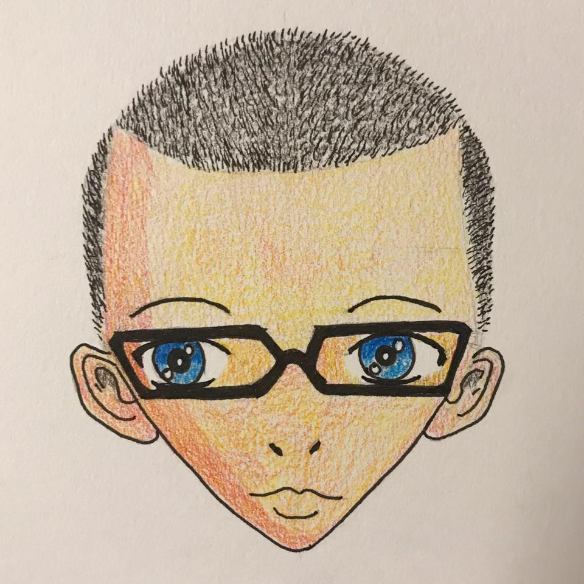
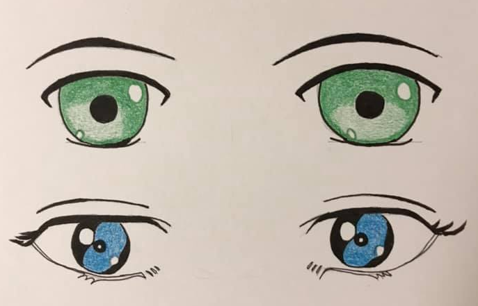

Emrys Cass
 Beginner
Beginner
Intermediate
Skillful
Register
"If people knew how hard I worked to get my mastery,
it wouldn't seem so wonderful at all."
-Michaelangelo
Like any good skill, hard work is required.
Before I started web development I spent most of my time with a
pencil in my hand studying the work of the masters. I'm not referring
to the Teenage Mutant Ninja Turtles.
